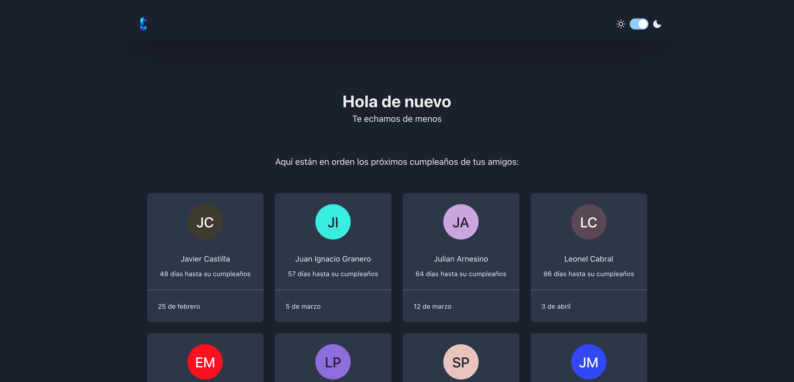
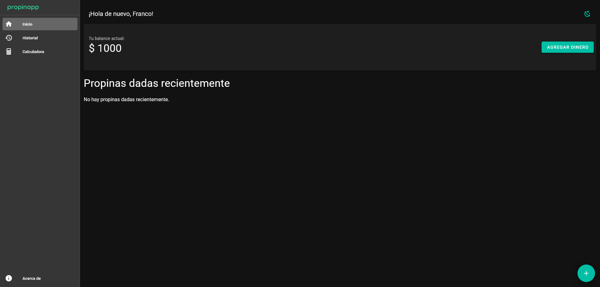
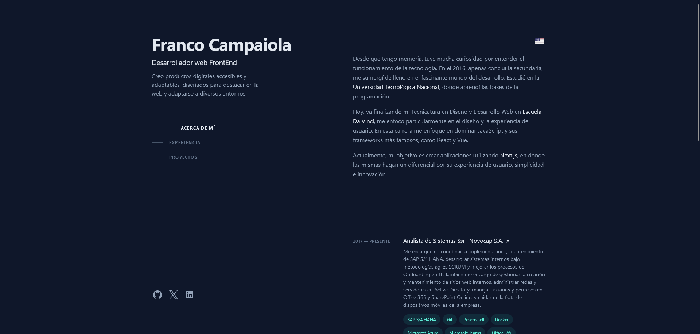

About
As a passionate DevOps Engineer with 6 years of experience, I specialize in streamlining the development and deployment process to enhance productivity and ensure seamless system reliability.
With expertise in CI/CD pipelines, cloud infrastructure (AWS, Azure), and containerization (Docker, Kubernetes), I work to build scalable, automated systems that drive business success. My focus is on infrastructure as code using Terraform and Python (CDK), ensuring that everything from provisioning to monitoring is optimized.
I am driven by the challenge of improving software quality through automation and collaboration.With that moto Currently i work in Booking.com as a DevOps Engineer.
Experience
— Present
As a DevOps Engineer at Booking.com, I managed cloud infrastructure on AWS, optimizing both performance and cost efficiency. I automated CI/CD pipelines using Gitlab and Terraform, significantly streamlining deployments and infrastructure provisioning. I led the migration to Docker and Kubernetes, improving scalability and reliability across various systems. Additionally, I enhanced monitoring and incident response capabilities, contributing to a reduction in downtime and ensuring high system availability.
- AWS
- Python
- Migration
- Architecting
— July 2021
As a one person team i was in charge of Migrating platform from a monolithic approach to Container based application to Cloud (including database) with implementing DevOps best practices.
- AWS
- Azure
- Docker
- Python
- Migration
- Training
— Aug 2021
At BlueJeans, managed AWS and Azure infrastructures using Terraform, provisioning over 150 Kubernetes clusters and migrating VMs and databases to the cloud. Orchestrated Kubernetes environments (AKS, EKS, Docker Swarm) and built microservice lab environments through Infrastructure as Code. Implemented robust monitoring and logging solutions using Datadog, New Relic, CloudWatch, and Sumo Logic, including custom application checks and dashboards. Also set up OKTA-based SSO for secure AWS access management.
- CI/CD platform
- AWS
- Azure
- Monitoring
- Cost optimisation
Projects
- 
Cumpleanito
Cumpleanito is a project to load the birthdays of your friends and family and that you can verify when their birthday is approaching.
- Next.js
- ChakraUI
- TypeScript
- 
Propinita
Propinita is a web application to link your virtual wallet and be able to receive tips from your clients.
- Next.js
- ChakraUI
- TypeScript
- 
Portfolio
Portfolio is my personal portfolio, where you can see my projects and contact me.
- Next.js
- TailwindCSS
- JavaScript